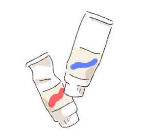

MY PROFILE
西川華美
比治山大学短期大学部美術科卒
販売や経理事務などの経験を経て、 学生の頃からの夢だったクリエイティブ職に就くため、 以前から興味のあったＷＥＢデザイナー養成科へ入校しました。
スキ

イヌ
ミニチュアダックスを飼っていました。

絵を描くこと
本格的に書き始めたのは小学２年生から。

植物
親の影響です。
そのほか
美術館の展示を見ること
縁あって美術館で働いていました。
パッケージデザインを見ること
いつかパッケージデザインし
てみたいなと思っています。
平沢進
表現者として誰かに別の感情を与えたり、
違う景色を見せられることを尊敬しています。
Red Velvet
グループに与えられた世界観が好きです。
掲載歴
２０１３
（株）学研パブリッシング
『女の子のためのクチコミ＆投稿マガジン』７月号
イラスト１枚掲載
２０１４
（株）学研パブリッシング
『女の子のためのクチコミ＆投稿マガジン』７月号
イラスト３枚掲載
（株）学研パブリッシング
『女の子のためのクチコミ＆投稿マガジン』１１月号
イラスト４枚掲載
２０１５
（株）学研パブリッシング
『女の子のためのクチコミ＆投稿マガジン』１月号
イラスト４枚掲載
参加展示
２０１４
１０月
「百鬼夜行」 比治山大学学内
２０１５
８月１７日～８月２３日
学内・ギャラリー展示「私は人間です展」
ギャラリーmosaic（広島市西区横川町）
１１月
「ノート展」
ギャラリーアッシュ（比治山大学学内）
２０１６
１月１９日～２４日
比治山大学短期大学部美術科本科第４８回卒業制作展
広島県立美術館 地下１階 県民ギャラリー
 私は人間です展
私は人間です展-ギャラリーmosaic
 卒業制作展
卒業制作展-広島県立美術館
 PC版
PC版
 SP版
SP版